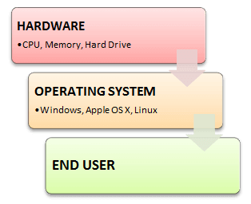

An Operating system (OS) is a software which acts as an interface between the end user and computer hardware. Every computer must have at least one OS to run other programs. An application like Chrome, MS Word, Games, etc needs some environment in which it will run and perform its task. The OS helps you to communicate with the computer without knowing how to speak the computer's language. It is not possible for the user to use any computer or mobile device without having an operating system.
